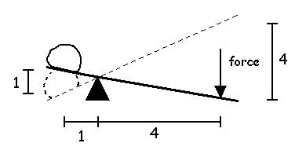
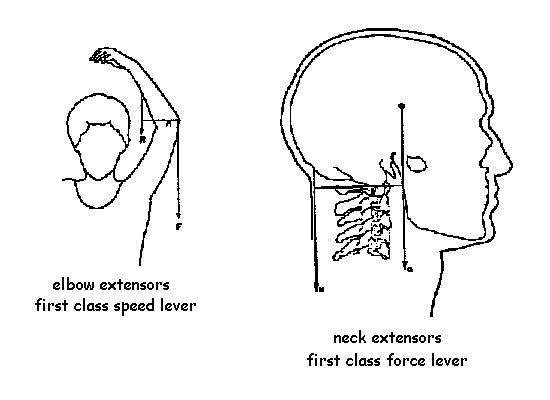
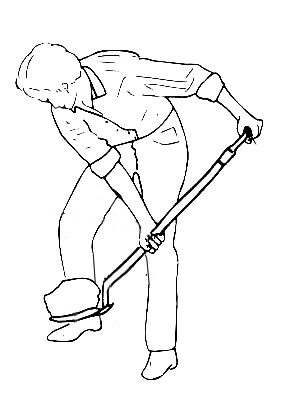

Laws of Levers
A first class lever can be either a speed lever or a force lever.
Speed Lever: A lever that has the force located closer to the fulcrum than the resistance (i.e. the resistance has a greater moment arm).
Force Lever: A lever that has the resistance located closer to the fulcrum than the force (i.e. the force has a greater moment arm.
By definition, a second class lever is always a force lever because the force has a mechanical advantage due to its larger moment arm. Conversely, a third class lever is always a speed lever because the resistance moves a greater distance in the same period of time (has a greater speed). Therefore, levers can be used to gain either a force advantage or a speed advantage.
Regardless of the class of lever, the mechanical advantage is the inverse of the speed advantage. The lever below has a mechanical advantage of four because the moment arm of the force is four times larger than the resistance. However, the speed advantage is 1/4 or 0.25 because the force must travel four times as far as the resistance.
Most muscles in the human body use third class leverage because the insertion of the muscle causes the applied force to be closer to the fulcrum (joint center) than the resistance (i.e. an object that is being lifted). The biceps acting on the forearm in the previous lecture is a good example of third class leverage. Since most of our muscles are third class levers, we are built for speed rather than force. Our muscles do not have to shorten by very much to produce motion but they must generate large forces because of their small moment arms.
Here are two examples of muscles making use of first class leverage.
Classification of levers is helpful in some cases but usually, it is more important to examine the forces and moments of force to calculate how to make the best usage of leverage. In the example of the shovel below, the load or resistance is at the bottom of the shovel. However, the person can place his hands wherever he chooses and we can classify the shovel as either a first class or third class lever.

If we consider the top hand to be the fulcrum, he pulls upward with the lower hand using third class leverage. How much force must he exert with his lower hand to raise the load?